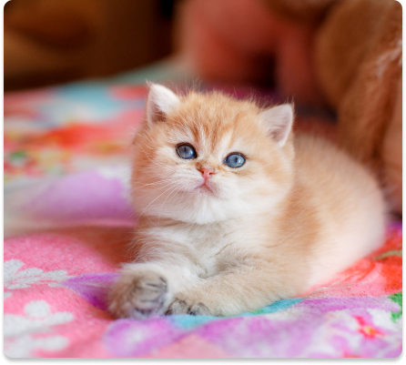

A freelance UX/UI designer working in the Silicon Valley!
Scroll down to see some of my works!
I’m a seasoned sales and business development professional recently converted UX/UI designer. Having worked at one of the largest consumer technology platforms in Silicon Valley I realize the importance of a great user experience in generating business outcome. I am passionate about designing and building scalabe solutions that can impact large communities. I am currently wokring as UX Designer at WFixer helping small businesses achieve their sales goals. I hold a bachelores degree in Biotechnology from San Jose State Univerity.
I am very skilled in creating new solutions to solve any UX/UI problem. Being exteremly fast in wireframin has helped me test various new ideas and showcase them to my teammates for feedbacks. I am passionate about creating new designs and I use different softwares such as Figma, Invision, XD and Illustrator to help me finish a perfect design. I’m eager to work with other designers to get exposed to different ideas and get inspiration.